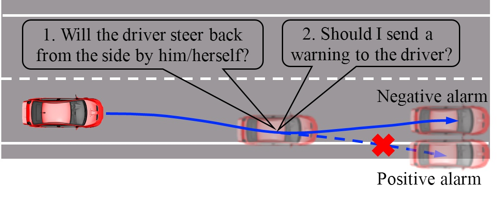
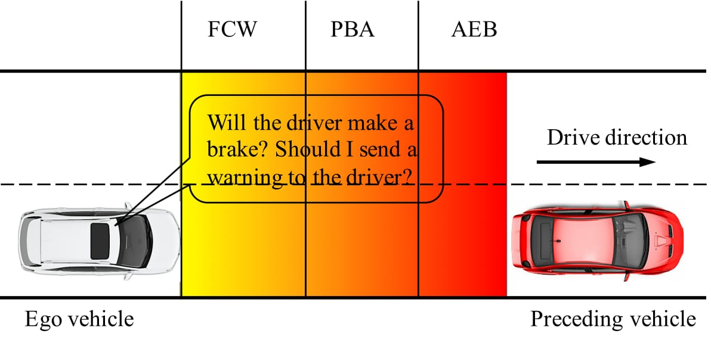
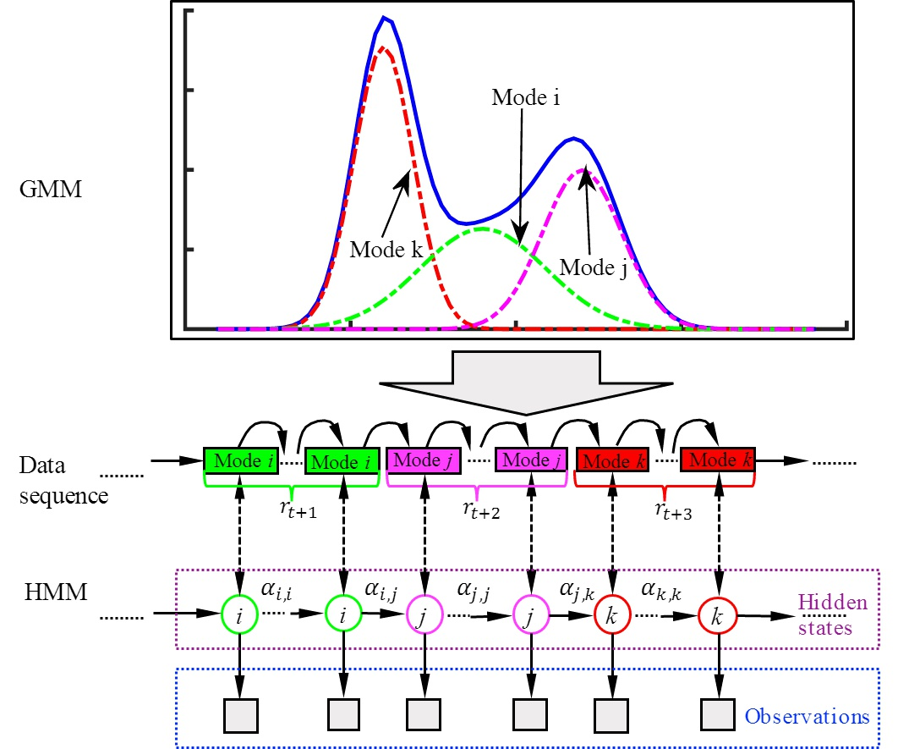
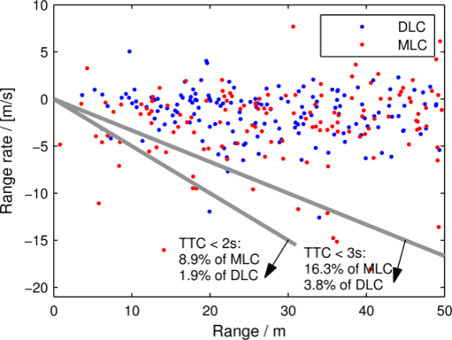

Comprehend Human Being for Better Auto-Driving
Design and evaluate automated driving technologies by learning human actions from big naturalistic driving data.
Evaluate Semi-Autonomous Vehicles Using Bayesian Dynamic Driver Models
 Wenshuo Wang, Ding Zhao, ''Evaluation of Lane Departure Correction Systems Using a Stochastic Driver Model,'' (Under Review), 2017.
|
Wenshuo Wang, Ding Zhao, ''Evaluation of Lane Departure Correction Systems Using a Stochastic Driver Model,'' (Under Review), 2017.
|
Ding Zhao, Wenshuo Wang, David J. LeBlanc, J. Karl Hedrick, ''Evaluation of a Semi-autonomous Lane Departure Assistant System with Naturalistic Driving Data,''
IEEE Intelligent Vehicle Symposium (IV), Redondo Beach, U.S.A., June 11-14, 2017. |
Abstract — Evaluating the effectiveness and benefits of driver assistance systems is crucial for improving the system performance. In this paper, we propose a novel framework for testing and evaluating lane departure correction systems
at a low cost by using lane departure events reproduced from naturalistic driving data. First, 529,096 lane departure events were extracted from the Safety Pilot Model Deployment (SPMD) database collected by the University of Michigan Transportation
Research Institute. Second, a stochastic lane departure model consisting of eight random key variables was developed to reduce the dimension of the data description and improve the computational efficiency. As such, we used a bounded Gaussian mixture
model (BGM) model to describe drivers' stochastic lane departure behaviors. Then, a lane departure correction system with an aim point controller was designed, and a batch of lane departure events were reproduced from the learned stochastic driver
model. Finally, we assessed the developed evaluation approach by comparing lateral departure areas of vehicles between with and without correction controller. The simulation results show that the proposed method can effectively evaluate lane departure
correction systems.
Towards Better Lane Departure Warning Systems - Learn Lateral Driver Behaviors

Wenshuo Wang, Ding Zhao, Junqiang Xi, Wei Han, ''A Learning-Based Approach for Lane Departure Warning Systems with a Personalized Driver Model,''
(under review), 2017. |
Abstract — Misunderstanding of driver correction behaviors (DCB) is the primary reason for false warnings of lane-departure-prediction systems. We propose a learning-based approach to predicting unintended lane-departure behaviors (LDB)
and the chance for drivers to bring the vehicle back to the lane. First, in this approach, a personalized driver model for lane-departure and lane-keeping behavior is established by combining the Gaussian mixture model and the hidden Markov model.
Second, based on this model, we develop an online model-based prediction algorithm to predict the forthcoming vehicle trajectory and judge whether the driver will demonstrate an LDB or a DCB. We also develop a warning strategy based on the model-based
prediction algorithm that allows the lane-departure warning system to be acceptable for drivers according to the predicted trajectory. In addition, the naturalistic driving data of 10 drivers is collected through the University of Michigan Safety
Pilot Model Deployment program to train the personalized driver model and validate this approach. We compare the proposed method with a basic time-to-lane-crossing (TLC) method and a TLC-directional sequence of piecewise lateral slopes (TLC-DSPLS)
method. The results show that the proposed approach can reduce the false-warning rate to 3.07%.
Predict Stastical Drivers' Braking Actions

Wenshuo Wang, Ding Zhao, Junqiang Xi, J. Karl Hedrick, ''Learning-Based Personalized Driver Model Using Bounded Generalized Gaussian Mixture Method,'' (Under review), 2017.
|
Abstract — A driver's braking behavior has a great impact on vehicle safety in car-following scenarios. Accurately predicting and inferring the driver's decision to brake is critical for designing warning systems and avoiding collisions.
In this paper we focus on predicting a driver's intent to brake in car-following scenarios from a perception-decision-action perspective on the basis of his/her driving history. A learning-based inference method, using onboard data from CAN-Bus,
radar and cameras as explanatory variables, is introduced to infer drivers' braking decisions by combining a Gaussian mixture model (GMM) with a hidden Markov model (HMM). The GMM is used to model stochastic relationships among variables, while
the HMM is applied to infer drivers' braking actions based on the GMM. We estimate the GMM parameters using an Expectation-Maximization (EM) algorithm. Real-case driving data from 49 drivers (more than three years' driving data per driver on average)
have been collected from the University of Michigan Safety Pilot Model Deployment (SPDM) database. We compare the GMM-HMM method to a support vector machine (SVM) method and a SVM-Bayesian filtering (SVM-BF) method. The experimental results are
evaluated by employing three performance metrics: accuracy, sensitivity, and specificity. The comparison results show that the GMM-HMM obtains the best performance, with an accuracy of 90%, sensitivity of 84%, and specificity of 97%. Thus, we believe
that this method has great potential for real-world active safety systems.
Infer Longitudianl Driving using the Gaussian Mixture Model

Wenshuo Wang, Ding Zhao, Junqiang Xi, J. Karl Hedrick, ''Learning-Based Personalized Driver Model Using Bounded Generalized Gaussian Mixture Method,'' (Under review), 2017.
|
Wenshuo Wang, Ding Zhao, Junqiang Xi, David J. LeBlanc, J. Karl Hedrick, ''Development and Evaluation of Two Learning-Based Personalized Driver Models for Car-Following Behaviors,'' American Control Conference (ACC), Seattle,
U.S.A., May 24–26, 2017.
|
Abstract — Personalized driver model plays an important role in development of the next generation advanced driver assistance systems and highly automated vehicle. One of the popular learning approaches of modeling driver typical behavior
(e.g., car following and lane change) is based on Gaussian mixture model (GMM). The Gaussian distribution is unbounded, however, the driver behavior as well as the observed data, such as vehicle speed, throttle opening, and braking force, etc.,
are usually non-Gaussian distribution and have bounded support. Therefore, the GMM could not perfectly fit this non-Gaussian and bounded support data with less number of components. To deal with this problem, an extension of generalized Gaussian
distribution (GGD), i.e., bounded generalized Gaussian mixture model (BGGMM) is presented, in which GMM, Laplace mixture model (LMM), generalized Gaussian mixture model (GGMM) are the special cases for different model parameters. Then, a car-following
scenario is selected to show the benefits of the proposed BGGMM. The parameters of BGGMM are learned from 8 drivers with naturalistic driving data collected from the University of Michigan Safety Pilot Model Deployment program. Then, the combination
between hidden mixture model (HMM) and BGGMM is developed to generate a personalized acceleration sequence. The car-following experiment results for 8 drivers show that the BGGMM are more flexible and robust to learn different shapes of observed
driving data that are usually non-Gaussian and have bounded support data, compared to GMM method.
Learn Lane Change Behaviors from Naturalistic Driving Data

Kazutoshi Nobukawa, Shan Bao, David J. LeBlanc, Ding Zhao, Huei Peng, and Christopher S. Pan, ''Gap Acceptance During Lane Changes by Large-Truck Drivers—An
Image-Based Analysis,'' IEEE Transactions on Intelligent Transportation Systems, vol. 17, no. 3, Mar. 2016.
|
Ding Zhao, Huei Peng, Kazutoshi Nobukawa, Shan Bao, David J. LeBlanc, Christopher S. Pan, ''Analysis of mandatory and discretionary lane change behaviors for heavy trucks,'' in 14th International Symposium on Advanced Vehicle Control (AVEC),
Tokyo, Japan, September 22-26, 2014.
|
Abstract — The behaviors of heavy vehicles drivers in mandatory and discretionary lane changes are analyzed in this paper. 640 mandatory and 2,035 discretionary lane change events were extracted from a naturalistic driving database.
Variations in gap acceptance and lane change duration were investigated. Statistical analysis showed that mandatory lane changes are more aggressive in gap acceptance and lane change execution than discretionary lane changes. The results can be
used for microscopic simulations, and design and evaluation of driver-assistant systems.